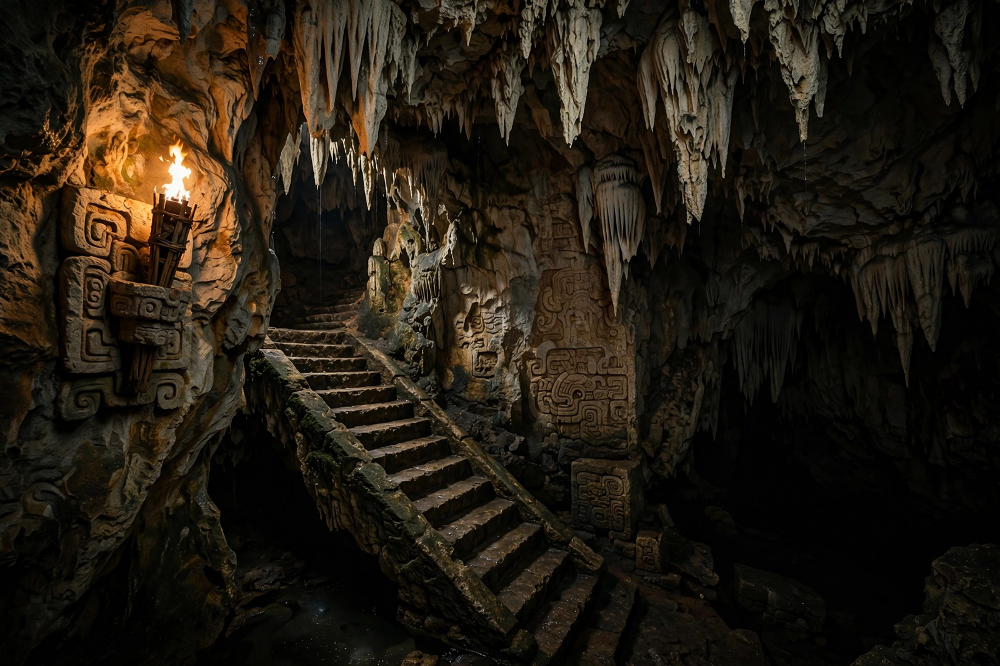

| Xibalba | |
|---|---|
| Name meaning | "Place of Fright" (K'iche') — Xib'alb'a |
| Type | Underworld / realm of the dead |
| Source | Popol Vuh |
| Rulers | Hun Came and Vucub Came ("One Death" and "Seven Death") and paired death lords |
| Defeated by | The Hero Twins |

Xibalba (K'iche': Xib'alb'a, roughly "place of fright") is the underworld of K'iche' Maya mythology, described in the Popol Vuh as a court of disease and death lying beneath the surface of the earth. Ruled by twelve lords headed by Hun Came ("One Death") and Vucub Came ("Seven Death"), Xibalba is the setting for the trials and ultimate triumph of the Hero Twins.
The road to Xibalba descends steep stairs and crosses rivers of blood and pus before reaching a council place where the lords sit in state — the first two figures being mere mannequins carved to humiliate visitors who greet them as kings. The realm contains a ballcourt and six deadly "houses" of torment: Dark House, Razor House, Cold House, Jaguar House, Fire House, and Bat House, in which the death god Camazotz severed the head of Hunahpu before it was restored.
The twelve lords of Xibalba worked in pairs specialising in particular afflictions — scabs, jaundice, swellings, and bloody vomiting among them — reflecting a Maya view of disease as the work of underworld agents. Their defeat by the Hero Twins, who sacrificed the two chief lords and refused to revive them, diminished death's power over humankind without abolishing it.
In Maya belief, caves — abundant in the limestone of Yucatán and the Guatemalan highlands — were literal portals to Xibalba, and they remain sites of ritual offerings today. Archaeological exploration of caves such as those near Balankanche and the vast cenote systems has recovered offerings spanning more than a millennium, anchoring the mythic geography of the Popol Vuh in the lived landscape of the Maya peoples.
Popol Vuh · Hero Twins · Maya peoples · Camazotz · Cenote